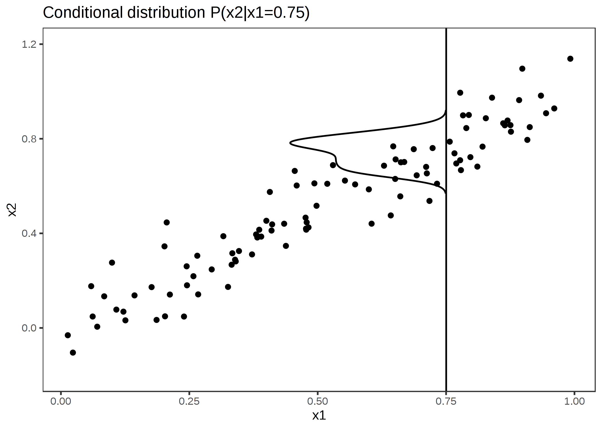

Chapter 5 LEARNING: WITH TARGET
5.1 Introduction
5.1.1 Classification
5.1.2 Regression
5.2 Econometrical regression
5.2.1 Basic regression
5.2.2 Basic dynamic model
5.2.3 Generalisations and constrains
5.2.3.1 GLM
Szczegółowo o założeniach i problemach: link
Interpretacja parametrów w modelach GLM: link
Założenia różnych modeli (źrodło: link)
Rodzaje reszt w modelach GLM: link
Podstawowe cechy modeli regresyjnych:
Traditional Linear Model
response variable: a continuous variable
error distribution: normal
link function: identity
Logistic Regression
response variable: a proportion
error distribution: binomial
link function: logit
Poisson Regression in Log Linear Model
response variable: a count
error distribution: Poisson
link function: log
Gamma Model with Log Link
response variable: a positive, continuous variable
error distribution: gamma
link function: log
W modelach GLM nie zapisuje się składnika losowego bo:
model modeluje nie wartość y ale parametr (np. p jako prawdopodobieństwo w rozkładzie Bernulliego). Reszty możemy sobie dodatkowo doliczyć.
5.2.4 Bayesian inference
5.2.5 Multivariate models
5.2.6 Models with effects
Załóżmy, że mamy model regresji liniowej ze zmiennymi przełącznikowymi (zmienne zero-jeden). Te zmienne “przełączają” wartość wyrazu wolnego pomiędzy różnymi podzbiorami obserwacji. Podobne przełączniki możemy mieć na parametrach kierunkowych. Jeżeli założymy że te zróżnicowane efekty nie są losowe, to mamy model efektami stałymi. Zazwyczaj można je estymować MKN. Jeżeli założymy że te przełączniki są losowane z jakiegoś rozkładu to mamy efekty losowe. Wtedy używamy innych technik estymacji. Są też modele gdzie mamy efekty mieszane, czyli zarówno losowe jak i nielosowe. Warto dodać że efekty można też zagnieżdżać.
To czy efekty są losowe czy nielosowe można próbować zweryfikować testem Hausman-a.
Modele panelowe
Modele panelowe są szczególnym przypadkiem modelu z efektami. Mamy tutaj dane przekrojowa w czasie. Dla badanych obiektów (np. przedsiębiorstw), mamy szeregi czasowe. Więc mamy wiele obserwacji na obiekt. Przełączniki działając miedzy obiektami. Na każdy przełącznik mamy kilka obserwacji więc jesteśmy w stanie je wyestymować.
Modele panelowe występują w wersji dynamicznej (zmiennymi objaśniającymi jest opóźniona zmienna objaśniana) oraz w wersji wielorównaniowej).
5.2.7 Nonparametric regression
5.2.7.1 MARS Splines
Mars jest techniką jednowymiarową (ma jedenowymiarowy output). Jego uogólnieniem wulowymiarowym (wielowymiarowy output) jest Polymars. Załóżmy że mamy jedną zmienną predykcyjną. MARS polega na tym aby zmienną x podzielić na segmenty i następnie w ramach segmentów poprzez np. Metodą Najmniejszych Kwadradów dopasować wielomian. W najprostszym przypadku może to być stała (wtedy dostaniemy schodki). Punkty rodzielające segmenty to węzły (knots). W przypadki wielomianów wyższych stopni chcemy żeby krzywe co najmniej się łączyły (regresje liniowe) w węzłąch \(f_k(x_k)=f_{k+1}(x_k)\), albo jeżeli to możliwe żeby w węzłach była zachowana ciągłość. Ogólniej mówiąc na wielomian stopnia M nakłada się warunek ciągłości w węzłach stopnia M-1 (czyli pochodne do stopnia M-1 muszą być równe w węźle dla sąsiadujących segmentów). Aby to osiągnąć na algorytm dopasowujący wielomiany (np. MKN) trzeba nałożyć dodatkowe warunki ograniczające.
W modelu musimy zatem z góry ustalić:
ilość węzłów i ich położenie
stopień wielomianu
5.2.8 Pros
Works well with a large number of predictor variables
Automatically detects interactions between variables
It is an efficient and fast algorithm, despite its complexity
Robust to outliers
5.2.9 Cons
Susceptible to overfitting
More difficult to understand and interpret than other methods
Not good with missing data
5.2.9.1 Isotonic
Linki:
Przykład numeryczny z algorytmem PAVA: Online isotonic regression Wojciech Kotłowski
Opis algorytmu: analyticsvidhya
Staramy się zminimalizować:
\[ \text{argmin}_x |y - x |^2 \\\text{subject to } x_0 \leq x_1 \leq \cdots \leq x_n \]
Najczęściej osiąga się to dzięki algorytmowi PAVA (Pool Adjacent Violators Algorithm).
Wizualizacja działania algorytmu PAVA:

5.2.10 Other regression models
5.2.10.1 Canonical analysis
5.2.10.2 ANOVA MANOVA ANCOVA
5.3 LDA & QDA
5.4 Bayesian models
5.5 Trees
Drzewo jest przykładem algorytmu zachłannego (greedy)
Dlaczego w praktyce używa się tylko drzew binarnych:
The number of possible splits goes up exponentially. If you are splitting on a continuous variable that has 1000 distinct values, there are 999 binary splits, but 999*998 trinary splits. There are:
\(\binom{1000-1}{3-1} = 999*998/2\)
splits, actually.
5.5.1 pros
Nie trzeba preprocesować danych. Nie trzeba normalizować zmiennych ciągłych. Zmiennych jakościowych nie trzeba rekodować.
możliwość pracy z danymi jakościowymi i ilościowymi
są nieparametryczne. Nie mają założeń o rozkładach
nie ma problemu z brakami danych. Przy analizie zmiennej na splicie braki są prostu pomijane.
łatwa interpretacja
szybkie wyliczenie predykcji przez niską złożoność obliczeniową O(log(m)).
Tak naprawdę same przeprowadzają selekcje cech (feature selection).
5.5.2 cons
Łatwo model przetrenować. Są niestabilne. Małe zmiany w danych generują mocno różniące się drzewa. Przez te problemy występuje duża wariancja modelu i słabe uogólnianie.
są algorytmem zachłannym więc nie dają gwarancji znalezienia optimum globalnego.
dosyć długo czas estymacji modelu
wrażliwość na rotacje danych (Geron 2018) s. 184.
5.5.3 Classification
5.5.4 Regression
5.6 SVM
5.6.1 Classification
Linki:
Fajny opis na “kapitał ludzki”: czesc 1 czesc 2
Załóżmy że mamy 2-wymiarowe dane, które dodatkowo mają 2 klasy 1 i -1. Dokładamy 3 wymiar na którym możemy odłożyć wartości przypisane klasom (Geron 2018) s 166. Mając 3 wymiary tworzymy hiperpłaszczyznę. Jej równanie to :
\(y=\textbf{w}^T\cdot \textbf{x} + b\)
Przejdźmy z powrotem do 2 wymiarów. Hiperpłaszczyzna w pewnym miejscy przecina nasze 2 wyjściowe wymiary danych (y=0, czarna linie poniżej). Dodatkowo na te 2 wymiary zrzutujemy 2 linie dla których wartości hiperpłaszczyzny wynoszą 1 i -1 (linie niebieska i różowa):

Obszar między liniami niebieską i różową stanową margines. Chcemy stworzyć tak żeby:
- był jak najszerszy.
- był umieszczony w takim miejscu żeby jak najlepiej separował obserwacje.
Szerokość marginesu jest pochodną nachylenia hiperpłaszczyzny, zatem jest funkcją parametrów tej hiperpłaszczyzny i jest równa długości długości wektora tych parametrów: ||w||. To jest wartość którą maksymalizujemy. Ze względu na uproszenie związane z liczeniem pochodnych maksymalizujemy:
\(\frac{1}{2}||\textbf{w}||^2\) Aby spełnić drugi warunek (separowanie obserwacji) na powyższą funkcję celu musimy dodać warunki ograniczające:
$t{(i)}(T ^{(i)}+b ) $
\(t^{(i)}\) równa się -1 dla obserwacji przypisanych do klasy -1 o równa się 1 do obserwacji przypisanych do klasy 1 (1 * 1 = 1 oraz -1 * -1 = 1). Pozyżej mamy ten problem że mamy tu doczynienia z twardym merginesami.
Z powyższym jest taki problem że mamy tutaj twarde marginesy, a zatem staramy się zrobić idealną separację. Problem optymalizacyjny jest tak sfomułowany że nie dopuszcza błędnych klasyfikacji. Żeby załagodzić temu możemy wprowadzić slack variables. Jeżeli do wartości y przypisanej obserwacji na hiperpłaszczyźnie dodamy w warunku zmienną \(\zeta\), to ta zmienna spowoduje że nawet jeżeli wartość y będzie nieodpowiednia to po dodaniu zmiennej \(\zeta\) warunek jednak będzie spełniony. To właśnie nam luzuje ograniczenie.
Zatem nowa funkcja celu:
\(\frac{1}{2}||\textbf{w}||^2 + C\sum_{i=1}^{m}{\zeta^{(i)}}\)
$t{(i)}(T ^{(i)}+b ) , , , dla , , i = 1, 2, …m $
W pierwszym równaniu drugi element sumy jest stały. Jeżeli zwiększamy C to suma slack variables się zmniejsza i na odwrót. Zatem mały C to duże slack variables i duża tolerancja na błędy klasyfikacji, czyli szeroki margines.
Powyższe zagadnienie optymalizacyjne to zadanie programowania kwadratowego. Zadanie to jest sprowadzone z tzw. problemu pierwotnego do problemu dualnego. Warto zauważyć że w celu przechodzenia pomiędzy wynikami rozwiązania problemu dualnego i pierwotnego nasze problem powinien spełniać warunki Karush-Kuhn-Tucker’a (KKT). Ostateczne rozwiązanie związane jest z przeliczeniem iloczynów skalarnych obserwacji, co jest ważną uwagą dla rozważań o maszynach kernelizowanych.
Maszyny kernelizowane
Żeby obserwacje ze względu na klasy było łatwiej separować, lepiej przenieść je do przestrzeni o większej liczbie wymiarów przy pomocy odpowiedniej funkcji. Do tego celu jest wykorzystywanych kilka najbardziej popularnych przekształceń. Jak wspomniano wcześniej, rozwiązania zadania optymalizacyjnego dla SVM opiera się o iloczyny skalarne obserwacji. Przekształcanie obserwacji do przestrzeni o większe ilości wymiarów i obliczanie iloczynów skalarnych z nowej przestrzeni jest obliczeniochłonne. Dlatego możemy zastosować kernel trick. Jeżeli nasze funkcja przekształcająca \(\Phi\) spełnia warunki Mercera to możemy zastosować twierdzenie Mercera i stworzyć tzw. funkcje jądrową. Funkcja ta umożliwia uzyskanie wyników iloczynu skalarnego obserwacji (wektorów) w przestrzeni o wyższej liczbie wymiarów bez konieczności przekształcania wektorów do tej przestrzeni (funkcja pracuje na pierwotnych wektorach). Zatem iloczyn skalarny liczmy nie przez \(<\Phi(a),\Phi(b)>\) (gdzie musimy na wektorach pierwotnych a i b zastosować przekształcenie \(\Phi\), żeby uzyskać nowe wektory w przestrzeni o większej ilości wymiarów), ale mamy prostszą funkcję jądrową K(a,b) działającą bezpośredni na wektorach a i b.
5.6.2 Regression
5.7 K-NN
5.7.1 Classification
Jak wyliczane jest prawdopodobieństwo w sklearn :
The class probabilities are the normalized weighted average of indicators for the k-nearest classes, weighted by the inverse distance.
For example: Say we have 6 classes, and the 5 nearest examples to our test input have class labels ‘F,’ ‘B,’ ‘D,’ ‘A,’ and ‘B,’ with distances 2, 3, 4, 5, and 6, respectively.
Then the unnormalized class probabilities can by computed by:
(1/2) * [0, 0, 0, 0, 0, 1] + (1/3) * [0, 1, 0, 0, 0, 0] +
(1/4) * [0, 0, 0, 1, 0, 0] + (1/5) * [1, 0, 0, 0, 0, 0] +
(1/6) * [0, 1, 0, 0, 0, 0] =
[1/5 ,1/2, 0, 1/4, 0, 1/2]5.7.1.1 KD - tree
Jest to algorytm do partycjonowania przestrzeni.
Pseudoalgorytm na budowę drzewa KD (mój intuicyjny):
Są jego różne wersje. Jedna z nich jest taka:
- Na początek wybierz losowy wymiar x. Dla tego wymiaru policz mediane po wszystkich punktach. Znajdź punkt najbliższy do mediany ze względu na analizowany wymiar. W ten sposób otrzymamy punkt medianowy. Podziel przestrzeń na dwie części (binarny podział) w oparciu o ten punkt.
- Wybierz losowo kolejny wymiar. Dla każdej podprzestrzeni (mamy już podział z poprzedniego kroku), znowu policz mediany znajdź punkty medianowe i znowu dziel przestrzeń binarnie dla dla każdego punktu medianowego.
- Kontynuujemy do momentu, aż w węzłach ilość obserwacji spadnie do ustalonego minimum. Węzły w których przerywamy liczenie stają się liśćmi drzewa.
Alternatywnie zamiast wybierać wymiary losowo możemy wybierać je cyklicznie (dla 3 wymiarów x,y,z wymieramy je po kolei na przemian: x,y,z; x,y,z; x,y,z; x,y,z.
Poprzez podział dostaje podział przestrzeni na podprzestrzenie (pierwszy rysunek poniżej). Ponieważ robiliśmy to hierarchicznie to ten podział można zaprezentować w postaci drzewa binarnego (drugi rysunek poniżej). Każdy węzeł drzewa to jeden podział podprzestrzeni.
Pseudoalgorytm na szukanie najbliższego sąsiada w drzewie KD (mój intuicyjny).
Mam nową obserwacje i chce poszukać który spośród punktów (precyzyjniej mówiąc węzłów) drzewa jest najbliższy.
Lokalizuje w którym liściu jest punkt poprzez przeszukanie drzewa od root.
Liczę odległość do najbliższego punktu wewnątrz tego liścia. Jeżeli list byłby pusty to liczę odległość do węzła tworzącego podział który określa ten liść. W ten sposób wyznaczam pierwszy proponowany najbliższy punkt dla nowej obserwacji.
Następnie rysuje koło którego środkiem jest nowy punkt a jego średnicę wyznacza odległość nowego punktu od punktu który jest proponowany jako najbliższy. Jeżeli koło przecina inne sąsiadujące podziały (wyznaczone przez węzły) to muszę je też przeanalizować. Od razu wyliczam odległość do tych podziałów od mojego nowego punktu (od podziałów a nie od węzłów będących obserwacjami tworzącymi te podziały. Patrz rysunek poniżej jak liczony jest \(dist_3\) i \(dist_4\))

Dla tych podziałów szukam odpowiadające im węzły na drzewie. Jeżeli podziałów do przeanalizowania jest kilka to zaczynam od najbliższego. Od tego podziału schodzę po drzewie w dół (kryterium takie, że w pierwszej kolejności staram się iść taką ścieżką jak bym chciał się zbliżać do mojego nowego punktu . Inne alternatywy też sprawdzam (oddalanie się), ale w drugiej kolejności) i sprawdzam czy którychś z węzłów nie zawiera punktu który jest bliżej niż dotychczas zaproponowany najbliższy punkt. Jeżeli taki węzeł znajduje, to aktualizuje moje koło ze środkiem w nowym punkcie. Nowe koło będzie oczywiście mniejsze. Wtedy znowu sprawdzam które podziały przecinają się z kołem (koło jest mniejsze więc powinno być ich mniej ).
Ta metoda ma wady dla przestrzeni wielowymiarowych. Przy dużej liczbie wymiarów prawie na pewno mój nowy element nie będzie w środku liścia , ale blisko jakiegoś podziału. Więc rysując koło najprawdopodobniej okażę się że trzeba sprawdzać dodatkowe węzły. Dodatkowo im mamy więcej wymiarów tym więcej wezłów/podziałów ze sobą sąsiaduje. Tak więc koło będzie przecinało wiele podziałów i algorytm zaczyna tracić efektywność. Aby temu zapobiec zaproponowano algorytm ball tree.
5.7.1.2 Ball tree
Ball tree radzą sobie lepiej niż KD-tree w przestrzeniach o dużej liczbie wymiarów.
Pseudoalgorytm budowy ball tree (mój intuicyjny):
Szukam dwóch najbardziej odległych punktów. Jednak aby nie sprawdzać wszystkich możliwych kombinacji (każdy punkt z każdym) stosuje trick. Wybieram losowy punkt i szukam pierwszego punktu który leży najdalej i potem drugiego który leży najdalej od tego pierwszego. Ilość sprawdzanych kombinacji mocno spada, a prawdopodobieństwo, że uzyskane tym sposobem dwa punkty są jednymi z najbardziej oddalonych, jest bardzo duże. Te 2 nowe punkt łączę linią i wyznaczam środek tej linii. Ten środek i punkty wyznaczają mi kulę. To jest pierwsza kula.
Linia którą narysowałem aby połączyć 2 odległe punkty powinna wyznaczać kierunek w którym wariancja zbioru jest największa. Zatem rysując płaszczyznę prostopadłą do tej linii mogę wyznaczyć sensowny podział zbioru na 2 mniejsze. Dla każdego z tych dwóch podzbiorów wyznaczam środek (coś na zasadzie centroidu). Dodatkowo metodą z punktu pierwszego w dla każdego z podzbiorów wyznaczam najodleglejsze punkty. Tak więc mogę teraz narysować 2 kolejne koła.
Powyższą procedurę kontynuuje aż liczebność obserwacji w kilach zbliży się do ustalonego minimum.
Sam schemat powstaje hierarchicznie i dlatego można przestawić go jako drzewo. Chociaż trzeba pamiętać że kula na tym samym poziomie hierarchii mogą się częściowo nakładać. Wydaje mi się że w wyniku podziału prawie każdy punkt powinien się ostatecznie znaleźć w jakimś liściu drzewa. Ale przez to że wybór najdalszych punktów w zbiorze jest przybliżony może nie zawsze tak być w 100%. Taki punkty potem przy wybieraniu najbliższego sąsiada chyba i tak są pomijane.

Pseudoalgorytm na szukanie najbliższego sąsiada w ball tree (mój intuicyjny - knn seach).
- Mam nowy punkt który dla którego chce poszukać najbliższego sąsiada.
- Sprawdzam czy punkt jest w jakimś klastrze będącym liściem (najmniejsze klastry które już nie były bardziej dzielone). Jeżeli jest wewnątrz, to szukam najbliższego sąsiada w tym klastrze. Potem rysuje koło i sprawdzam czy nie jest czasem bliżej do granic innych klastrów. Jeżeli tak jest, to też je przeszukuje. Tutaj działa taki schemat poruszania się po drzewie jak przy KD-tree.
- Jeżeli nowy punkt jest na zewnątrz liści, to sprawdzam do centrum którego klastra jest mu najbliżej. Jeżeli to klaster liść to z tego najbliższego klastra wybieram mu sąsiada. Jeżeli to jest duży klaster zawierający podklastry to muszę dalej szukać w tym dużym klastrze najbliższym podklastrów, aż zejdę to klastra liścia. (tutaj też mamy do czynienia z poruszaniem się w duł drzewa po kolejnych klastrach czyli węzłach, coś podobnego do kd-tree).
5.7.1.3 Condensing (Hart algorithm)
Ideą jest żeby ze zbioru treningowego Z tworzę podzbiorów S w taki sposób że elementy które nie mają wpływ na klasyfikację ( nie są położone na granicach klas) usunąć.
Oznaczenia:
T(x) - Prawdziwa klasyfikacja elementu x ze względu na klasę
S(x) - Klasyfikacja elementu x ze względu na decyzję podjętą w oparciu o nowy budowany podzbiór S.
Z(x) - Klasyfikacja elementu x ze względu na decyzję podjętą w oparciu o pełny zbiór Z.
k - ilość najbliższych sąsiadów uwzględnianych w klasyfikacji metodą knn.
- Na początku zbiór S jest pusty. Losuję k elementów z zbioru Z i dodaje do zbioru S.
- Wybieram losowy punkt x ze zbioru Z nie należący do zbioru S. Przeprowadzam klasyfikację dla x regułą k-nn ze względu na zbiór Z i S (czyli liczę Z(x) i S(x)). Jeżeli wynik obu klasyfikacji jest taki sam to pomijam ten punkt i losuje następny. Jeżeli jednak wynik Z(x) i S(x) jest różny to sprawdzam czy klasyfikacja S(x) jest taka sama jak T(x). Jeżeli tak, to dodaje element do zbioru S. Jeżeli nie to szukam spośród elementów Z nie należących do S elementu najbliższego w stosunku do x który należy do tej samej klasy co Z(x). Dzięki temu dodam punkt który raczej poprawi zdolność klasyfikacji niż pogorszy. Inaczej dodałbym punkt źle zaklasyfikowany w oparciu o Z i raczej podniosłoby błąd predykcji.
- Powtarzam tą procedują, aż nie będzie sytuacji że dla punktu x należącego dla Z a nie należącego do S będzie spełnione Z(x) != S(x).
Bardziej szczegółowy opis:
Wybieram po kolei punkty ze zbioru x.
Scan all elements of X, looking for an element x whose nearest prototype from S has a different label than x
Remove x from X and add it to S
Repeat the scan until no more prototypes are added to S
S used instead of X for kNN classification.
5.7.1.4 Editing
5.7.1.5 Reducing
5.7.2 Regression
5.8 Log-linear model
5.9 Similarity learning
5.10 Survival models
5.10.1 Podstawowe pojęcia
Linki:
Obserwacje cenzurowane
Cenzurowanie jest problemem odpowiednikiem problemu braku danych w analizie przeżycia.
Cenzurowanie wynika zasadniczo z dwóch przyczyn.
- Okres “życia” obserwacji wykracza poza okres analizowany (np. kredyt jest dalej spłacany po końcu analizowanego okresu i nie wiemy czy ostatecznie został spłacony czy nie). Tutaj mamy sytuacje prawostronnego cenzurowania
- Obserwujemy obserwacje od pewnego momentu i nie wiemy co się z nią działo wcześniej (np. nie wiemy jak długo był spłacany kredyt). To jest cenzurowanie lewostronne.
- Wiemy że zdarzenie zaszło w jakimś momencie, ale nie wiemy dokładnie kiedy. Wiemy tylko w jakim przedziale czasowym to było (interaval censoring).
- Od pewnego momentu w czasie trwania analizy nie mamy informacji o obserwacji (pacjent wycofał się z badania, utraciliśmy z nim kontakt, w bazie jest brak danych o tym co się działo z kredytem od pewnego momentu). Jest to kolejny przykład cenzurowania prawostronnego. Tutaj występuje problem informatywności. Może być tak że, u pacjentów u których leczenie zadziałało bardzo dobrze, może być wyższe ryzyko wycofania się z badania. Wtedy wycofanie się oznacza też mniejsze ryzyko zgonu. Czyli cenzorowanie danych jest skorelowane z ryzykiem zdarzenia.
Jest jeszcze sytuacji kiedy badamy kredyty np. od stycznia 2020 a pewnie kredyt został wypłacony z marciu 2020. Mamy o nim pełne informacje (nie ma cenzurowania). Kredyt też być spłacony przed końcem czasu badania (nie było zdarzenia defaultu). Wtedy też nie ma cenzurowania.
Co robić z problemem cenzurowania:
- Można usunąć takie obserwacje.
- Można wykonać imputacje.
W analizie kredytów występuje też problem też że kredyt po defaulcie może z powrotem ożyć, co narusza założenia większości modeli analizy przeżycia. Wtedy ozdrowione kredyty możemy traktować jako nowe obserwacje. Jednak powoduje to pewne obciążenie wyników.
Obserwacje obcięte
Nie do końca rozumiem czym są obserwacje ucięte i czym się różnią od cenzurowanych. Trzeba to doczytać
Zdarzenie (event)
np. śmierć pacjenta, defalut kredytu.
Funkcja gęstości prawdopodobieństwa f(t)
Określa prawdopodobieństwo zdarzenia w czasie t, gdzie czas t to dowolny przedział [t1,t2]:
\(P(t_1 < T \leq t_2)=\int_{t1}^{t2}{f(t)}dt\)
Gdzie T to jest moment zdarzenia.
Dystrybuanta funkcji gęstości prawdopodobieństwa F(t)
Między nią a funkcją gęstości mamy zależność:
$$ f(t) = dF(t)/dt \
F(t) = _{0}^{t}{f(u)du} $$
Funkcja przetrwania S(t) (survival function)
Nazywa się też funkcją dożycia lub funkcją trwania. Pokazuje że dana osoba przetrwa dłużej niż określony czas. Można ją wyliczyć jako dopełnienie dystrybuanty funkcji gęstości:
S(t) = 1-F(t)
Z funkcją gęstości łączą ją następujące zależności:
\[ f(t)=-dS(t)/dt S(t)=\int_{t}^{\infty}{f(u)du} \]
Znajomość funkcji (1) gęstości , (2) dystrybuanty i (3) przetrwania pozwala nam wyliczyć prawdopodobieństwo zdarzenia w określonym czasie:
\[ P(t_1 < T \leq t_2)=\int_{t1}^{t2}{f(t)}dt \\ P(t_1 < T \leq t_2)=F(t_2)-F(t_1) \\ P(t_1 < T \leq t_2)=S(t_2)-S(t_1) \]
Funkcja hazardu \(\lambda(t)\)
Nazywana też funkcją intensywności procesu lub natężenia zdarzeń. Określa ona prawdopodobieństwo zdarzenia w chwili t pod warunkiem że klient dożył do tej chwili:
\[ \lambda(t)=\frac{f(t)}{S(t)} = \frac{d[ln(S(t))]}{dt} \]
Skumulowana funkcja hazardu:
Jak sama definicja mówi.
Struktura danych - uwagi
Wydaje mi się że jest tak (np. w Pythonie) że tutaj nas nie interesują dokładne momenty rozpoczęcia i zakończenia zbierania danych o obserwacji. Potrzebujemy tylko czasu trwania obserwacji.
Uwagi o podziale estymatorów.
Są tutaj podzielone na standardowe (bardziej klasyczna statystyka) i inne (bardziej machine learningu)
Podział metod standardowych można przestawić tak:

Powyżej w metodach parametrycznych (zielony kolor) powinny być jeszcze dodane model proporcjonalnego hazardu ( w moim podziale dalej są uwzględnione).
5.10.2 Estymatory standardowe-nieparametryczne
5.10.2.1 Tablice trwania życia (life table)
Tablica przeżycia to najprostsze opisowe podejście do tematu.
Przykładowe najprostsza analiza przeżycia:
| Age |
living (At ri sk)** |
|
ensored (ci którzy o puścili badanie ale nie umarli i r edukują ilość obs erwacji w k olejnym wie rs zu)** |
Prob ability of death | Survial prob ability | Cum ulative S urvival Probab ility |
|---|---|---|---|---|---|---|
| 0 | 14,353 | 2 | 0 | 0.0001 | 1 - 0.0001 = 0.9999 | 0.9999 |
| 1 | 14,353 - 0 - 2 = 1 4,351 | 248 | 1855 | 0.0173 | 1 - 0.0173 = 0.9827 | 0.9999 * 0.9827 = 0. 9826017 |
| 2 | 14,351 - 1855 - 240 = 1 2,248 | 155 | 758 | 0.0127 | 1 - 0.0127 = 0.9873 |
6017 * 0.9873 = 1. 9701227 |
5.10.2.2 Kaplan Mayer
Jest to nieparametryczny estymator funkcji przeżycia. Nie można go niestety używać do predykcji czyli szacowania czasu przeżycia dla elementów które żyły dłużej niż elementy w próbie (np. w probie \(t_{max} = 10\) , a ja chce wiedzieć jak funkcja przeżycia zachowa się dla t = 20)
Estymator ma wzór:
\[ \hat{S}(t)= \prod_{i:\,t_i\leq t}{1-\frac{d_i}{n_i}} \]
Czyli jest to iloczyn (czyli skumulowanie) prawdopodobieństw dożycia do poprzednich okresów czasu.
Przykład obliczeń:
| Time, Years | Number at Risk Nt |
Number of Deaths Dt |
Number Censored Ct |
Survival Pr obability St+1 = St*((N~ t +1-Dt+1~ )/Nt+1) |
|---|---|---|---|---|
| 0 | 20 | 1 | ||
| 1 | 20 | 1 | 1* ((20-1)/20) = 0.950 | |
| 2 | 19 | 1 |
|
|
| 3 | 18 | 1 | 0.950* ((18-1)/18) = 0.897 | |
| 5 | 17 | 1 | 0.897* ((17-1)/17) = 0.844 | |
| 6 | 16 | 1 | 0.844 | |
| 9 | 15 | 1 | 0.844 | |
| 10 | 14 | 1 | 0.844 | |
| 11 | 13 | 1 | 0.844 | |
| 12 | 12 | 1 | 0.844 | |
| 13 | 11 | 1 | 0.844 | |
| 14 | 10 | 1 | 0.760 | |
| 17 | 9 | 1 | 1 | 0.676 |
| 18 | 7 | 1 | 0.676 | |
| 19 | 6 | 1 | 0.676 | |
| 21 | 5 | 1 | 0.676 | |
| 23 | 4 | 1 | 0.507 | |
| 24 | 3 | 3 | 0.507 |
Wariancja estymatora jest dana wzorem (Greenwood formula):
\[ \hat \sigma^2[\hat S(t)] = \widehat var[\hat S(t)] = \hat S(t)^2 \sum_{i:t_i \le t} \frac{d_i}{n_i(n_i-d_i)} \]
Jeżeli nie ma danych cenzorowanych wzór uprasza się do:
\[ \hat \sigma^2[\hat S(t)] = \frac{\hat S(t) [1- \hat S(t)]}{n} \]
Założymy że estymator funkcji przeżycia Kaplana Mayera ma rozkład asymptotycznie normalny:
\[ \hat S(t) \simeq N(\hat S(t), \sigma(t)/\sqrt(n)) \]Wtedy możemy zbudować przedziały ufności :
\[ \bigg(\hat S(t) \pm z_{1-\alpha/2} \cdot \hat \sigma/\sqrt(n) \bigg), \]
Gdzie z to jest rozkład normalny standaryzowany.
5.10.2.3 Nelson Aalen
Jest to nieparametryczny estymator skumulowanej funkcji hazardu. Podobnie jak przy estymatorze Kaplana Mayera nie może być używany do predykcji. Jest dany formułą:
$$
(t)= _{i:,t_it}{} $$
Gdzie \(d_i\) to zdarzenia w czasie i, a \(n_i\) to ilość elementów w okresie i .
Estymator wariancji wynosi:
$$
ar((t))= _{i:,t_it}{} $$
Porównywanie funkcji estymowanych
Przy metodach estymacji takich jak Kampal Mayer czy Nelson Aalen nie możemy badać bezpośrednio wpływu jakichś dodatkowych zmiennych objaśnianych na funkcję przeżycia. Żeby np. zbadać wpływ tego czy palenie wpływa naszą funkcję przeżycia, jedyne co nam pozostaje to zrobić dwie oddzielne funkcje dla palących i dla niepalących i potem je porównać. Są liczne statystyki na stawienie testowanie hipotezy czy krzywe są różne:
współczynnik hazardu (hazard ratio)
test istotności z
test logarytmiczny rang (log-rank test) - dalej jest przykład numeryczny
test WIlxona
test Tarone’a
test Peto
zmodyfikowany test Peto
test Fleminga
Log rank test - przykład numeryczny:
Założmy że mamy 2 krzywe. Poniżej pokazuje tabele wyliczeń dla obu:
Pierwsza krzywa:
| Time, Months | Number at Risk Nt |
Number of Deaths Dt |
Number Censored Ct |
Survival Pr obability ! |
|---|---|---|---|---|
| 0 | 10 | 1 | ||
| 8 | 10 | 1 | 1 | 0.900 |
| 12 | 8 | 1 | 0.788 | |
| 14 | 7 | 1 | 0.675 | |
| 20 | 6 | 1 | 0.675 | |
| 21 | 5 | 1 | 0.540 | |
| 26 | 4 | 1 | 0.405 | |
| 27 | 3 | 1 | 0.270 | |
| 32 | 2 | 1 | 0.270 | |
| 40 | 1 | 1 | 0.270 |
Druga krzywa:
| Time, Months | Number at Risk Nt |
Number of Deaths Dt |
Number Censored Ct |
Survival Pr obability ! |
|---|---|---|---|---|
| 0 | 10 | 1 | ||
| 25 | 10 | 2 | 1.000 | |
| 28 | 8 | 1 | 0.875 | |
| 33 | 7 | 1 | 0.750 | |
| 37 | 6 | 1 | 0.750 | |
| 41 | 5 | 1 | 0.600 | |
| 43 | 4 | 1 | 0.600 | |
| 48 | 3 | 3 | 0.600 |
Z powyższych dwóch tabel zrobimy jedną uwzględniając ilość obserwacji zgonów (deaths):
| Time, Months | Number at Risk in Group 1 N1t |
Number at Risk in Group 2 N2t |
Number of Events (Deaths) in Group 1 O1t |
Number of Events (Deaths) in Group 2 O2t |
|---|---|---|---|---|
| 8 | 10 | 10 | 1 | 0 |
| 12 | 8 | 10 | 1 | 0 |
| 14 | 7 | 10 | 1 | 0 |
| 21 | 5 | 10 | 1 | 0 |
| 26 | 4 | 8 | 1 | 0 |
| 27 | 3 | 8 | 1 | 0 |
| 28 | 2 | 8 | 0 | 1 |
| 33 | 1 | 7 | 0 | 1 |
| 41 | 0 | 5 | 0 | 1 |
Test opiera się na formule:
\[ \chi^2=\sum{\frac{(\sum{O_{jt}}-\sum{E_{jt}})^2}{\sum{E_{jt}}}} \]
Gdzie O to jest obserwowana ilość zdarzeń a E oczekiwana ilość zdarzeń. Oczekiwana ilość to ilość zdarzeń taka jaka powinna występować jeżeli krzywe się nie różnią.
Obliczanie oczekiwanej ilości zdarzeń dla każdej krzywej:
| T ime, Mon t hs | N u mber at Risk in G roup 1 *N~ 1t ~ ** |
N u mber at Risk in G roup 2 *N~ 2t ~ ** |
T otal N u mber at R i sk N ~ t ~ |
N u mber of E v ents in G roup 1 *O~ 1t ~ ** |
N u mber of E v ents in G roup 2 *O~ 2t ~ ** |
T otal N u mber of Eve n ts O ~ t ~ |
*Exp e cted N u mber of E v ents i n ** G roup 1 E 1t = N 1t * (O~ t /N t~) |
*Exp e cted N u mber of E v ents i n ** G roup 2 E 2t = N 2t * (O~ t /N t~) |
|---|---|---|---|---|---|---|---|---|
| 8 | 10 | 10 | 20 | 1 | 0 | 1 | 0 .500 | 0 .500 |
| 12 | 8 | 10 | 18 | 1 | 0 | 1 | 8 *(1 / 18)= 0 .444 | 0 .556 |
| 14 | 7 | 10 | 17 | 1 | 0 | 1 | 0 .412 | 0 .588 |
| 21 | 5 | 10 | 15 | 1 | 0 | 1 | 0 .333 | 0 .667 |
| 26 | 4 | 8 | 12 | 1 | 0 | 1 | 0 .333 | 0 .667 |
| 27 | 3 | 8 | 11 | 1 | 0 | 1 | 0 .273 | 0 .727 |
| 28 | 2 | 8 | 10 | 0 | 1 | 1 | 0 .200 | 0 .800 |
| 33 | 1 | 7 | 8 | 0 | 1 | 1 | 0 .125 | 0 .875 |
| 41 | 0 | 5 | 5 | 0 | 1 | 1 | 0 .000 | 1 .000 |
|
|
2. 6 20 | 6. 3 80 |
5.10.3 Estymatora standardowe parametryczne
Tutaj zakładamy że znamy funkcję gęstości rozkładu zdarzeń f(t).
Podstawowe estymatory możemy podzielić na 2 klasy :
przyśpieszonego życia (AFT - accelerated failure time)
proporcjonalnego hazardu
W modelach AFT zakładamy, że predyktor ma multiplikatywny wpływ na funkcję przeżycia (co się sprowadza do liniowego wpływu na logarytm funkcji przeżycia). W modelu proporcjonalnego hazardu zakłada się z kolei, że predyktor ma multiplikatywny wpływ na funkcję hazardu co się sprowadza do zależności: \(\lambda(t,x)=\lambda_0(t)e^{x\beta}\).
Założenia parametrycznych modeli proporcjonalnego hazardu:
The true form of the underlying functions (hazard, survival) are specified correctly.
The relationship between the predictors and the log hazard is linear.
In the absence of interactions, the predictors act additively on the log hazard.
The effect of the predictors is the same for all values of t.
Dla modeli AFT stosuje się rozkłady:
Weibulla
wykładniczy
log-normalny
log-logistyczny
gamma
Dla modeli proporcjonalnego hazardu stosuje się rozkłady:
weibulla
wykładniczy
gompertza
Rozkłady dopasowuje się najczęściej metodą największej wiarygodności lub metodą najmniejszych kwadratów. .
Regresja liniowa
Można tutaj modelować czas zdarzenia t. Zatem t = a0 + a1x + a2x + … + anx.
Zakłady że warunkowy rozkład t to rozkład normalny.
5.10.4 Estymatory standardowe semi-parametryczne
5.10.4.1 Cox
link.
W modelu tym funkcja estymuje się nieparametrycznie. Dodatkowo opiera się ona o pojęcia hazardu bazowego czyli wartości funkcji hazardu kiedy wszystkie x = 0. Jest zaliczany do metod semiparametrycznych. Z jednej strony nieparematrycznie estymuje funkcję hazardu jednak z drugiej strony są założenia (i.e., independence, changes in predictors produce proportional changes in the hazard regardless of time, and a linear association between the natural logarithm of the relative hazard and the predictors).
Warto zwrócić uwagę na założenia stałości wartości predyktorów w czasie. Są uogólnienia gdzie predyktory mogą się zmieniać w czasie. W dla modelu Coxa wtedy hazard nie jest już proporcjonalny.
Model coxa wystpiue
5.10.5 Estymatory inne

5.10.5.1 Random Survival Forest
Jest zaimplementowany w Pythonie
Another feasible machine learning approach which can be used to avoid the proportional constraint of the Cox proportional hazards model is a random survival forest (RSF). The random survival forest is defined as a tree method that constructs an ensemble estimate for the cumulative hazard function. Constructing the ensembles from base learners, such as trees, can substantially improve the prediction performance. [13]
Basically, RSF computes a random forest using the log-rank test as the splitting criterion. It calculates the cumulative hazards of the leaf nodes in each tree and averages them in following ensemble.
The tree is grown to full size under the condition that each terminal node have no less than a prespecified number of deaths. [18]
The out-of-bag samples are then used to compute the prediction error of the ensemble cumulative hazard function.
5.10.5.2 DeepSurv
Jest to zastosowanie sieci neuronowych będących zamiennikiem dla modelu Coxa. Więc podobnie jak tam, badamy zależność od wielu predyktorów zachowania się funkcji hazardu link .
Oto architektura sieci:
Jej funkcja loss, która jest minimalizowana to:
Funkcja straty jest oparta o funkcję straty optymalizowaną w modelu Cox-a link. Jest chyba optymalizowane niezależnie dla każdego punktu czasowego. Aby minimalizować tą funkcję musimy maksymalizować wyrażenie w czerwonej ramce. Lewa część wyrażenia musi być zatem maksymalizowana (hazard dla elementów dla których wystąpiło zdarzenie w analizowanym momencie). Prawa minimalizowana. W prawej części są elementy dla których nie zaszło zdarzenie do analizowanego momentu czasowego.
5.10.6 Performence
Dopasowanie rozkładów do danych bada się w oparciu o reszty:
reszty coxa snella
reszty martyngałowe
reszty schoenfelda
5.11 Ensembled models
5.11.1 Bagging and Pasting
5.11.1.1 Random Forest
5.11.1.1.1 Out of Bag Error
Pseudoalgorytm (mój intuicyjny) - Random Forest dla klasyfikacji.
- Dla każdego drzewa losuję próbę z danych. Robię to albo boostrapowo (z powtarzeniem z n elementowej populacji losuje n etlementów), albo bez powtarzania.
- Buduję niezależnie drzewa. Każde drzewo zakładam że na końcu zwraca twarde labels a nie prawdopodobieństwa. W trakcie wyliczam Out-Of-Bag Error. Dana obserwacje jest predykowana przez wszystkie modele dla których nie została ona wylosowana do zbioru uczącego. Out-Of-Bag error jest przydatny do ustalania optymalnej ilości drzew.
- Na koniec przeprowadzam ostateczną predykcję, poprzez głosowanie drzew. Każde drzewo ma taką samą wagę.
Pros:
Random forest can solve both type of problems that is classification and regression and does a decent estimation at both fronts.
One of benefits of Random Forest which exists me most is, the power of handle large data sets with higher dimensionality. It can handle thousands of input variables and identity most significant variables so it is considered as one of the dimensionality reduction method. Further, the model outputs importance of variable, which can be a very handy feature.
It has an effective method for estimating missing data and maintains accuracy when large proportion of the data are missing.
It has methods for balancing errors in data sets where classes are imbalanced.
The capability of the above can be extended to unlabeled data, leading to unsupervised clustering,data views and outlier detection.
Random forest involves sampling of the input data with replacement called as bootstrap sampling. Here one third of data is not used for training and can be used to testing. These are called the OUT OF BAG samples. Error estimated on these out put bag samples is know as out of bag error. Study of error estimates by out of bag, gives avidenc to show that the out of bag estimate is as accurate as using a test set of the same size as the training set. Therefore, using the out of bag error estimate removes the need for a set aside test set.
Cons:
It surely does a good job at classification but not as for regression problem as it does not gives precise continuous nature prediction. In case of regression, it doesn’t predict beyond the range in the training data, and that they may over fit data sets that are particularly noisy.
Random forest can feel like a black box approach for a statistical modelers we have very little control on what the model does. You can at best try different parameters and random seeds.
5.11.2 Boosting
Pierwsza z siedmiu części z artykułami o algorytmach typu boosting link:deep-and-shallow . Linki do kolejnych części są na końcu artykułu.
5.11.2.1 Ada Boost
Adaptive boosting (adaptacyjne wzmacnianie).
Mam tutaj 2 rodzaje wag:
Wagi modeli. Im lepszy model tym będzie miał w finalnej klasyfikacji większą wagę. \(\alpha_t = \frac{1}{2}\ln(\frac{1-total.error}{totl.error})\) . Ponieważ funkcja nie ma wartości dla total_error równe 0 i 1 zazwyczaj dodaje się tutaj jakąś korektę dla zabezpieczenia. Total error to suma błędów ważonych wagami obserwacji.
Wagi obserwacji. Obserwacje źle zaklasyfikowane przez i-ty model mają większą wagę przy następnym modelu. Wagi mogę być używane do losowania ważonego dla następnego modelu, albo do ważonego Ginii index używanego do obliczania “impurity.” Wagi dla obserwacji źle zaklasyfikowanych liczy się ze wzoru : \(nowa.waga = stara.waga \cdot e^{waga.poprzedniego.modelu}\). Wagi dla klasyfikacji dobrze zaklasyfikowanych liczy się ze wzoru: \(nowa.waga = stara.waga \cdot e^{- waga.poprzedniego.modelu}\) .
W tym wzorach można dodać współczynnik uczenia w wykładniku liczby e. Patrz: (Bonaccorso 2019) s 263.
Ada boost- uwagi:
Zazwyczaj bazuje na drzewach. Jeżeli są to drzewa, to najczęściej używa się stumps, czyli drzew binarnych z tylko jednym podziałem.
występuje w m.in następujących wersjach:
Bazowy AdaBoost do zagadnień binarnych.
M1 - podstawowy algorytm dla zagadnienia klasyfikacyjnego. (Mirjalili 2019) s 234.
M2 - (porównanie z M1 link)
SUMME - jest uogólnieniem na zagadnienie wieloklasowego bez używania podejścia jeden-przeciwko-wszystkim (One-vs-Rest). Jeżeli robimy model binarny to podeście to redukuje się do standardowego AdaBoost M1.
SUMME.R - (litera R od real - AdaBoost rzeczywisty) rozwinięcie, gdzie wagi są liczone w oparciu o prawdopodobieństwa. Pełny algorytm w (Bonaccarso2019?) s 268.
R2 - AdaBoost dla zagadnienia regresyjnego. Pełny algorytm w (Bonaccarso2019?) s 271.
Pseudoalgorym (mój intuicyjny) - dla wariantu M1 w ramach zagadnienia binarnej klasyfikacji
Ustalam równe wagi dla obserwacji. Ustalam ilość iteracji m. Ustalam Learning Rate
Buduje pierwszy model
For t = 1 to n:
Buduje model na predykcjach z poprzedniego modelu.
Wyliczam wagę modelu proporcjonalną do jego dokładności: \(\alpha_t = \frac{1}{2}\ln(\frac{1-total.error}{totl.error})\)
Wyliczam nowe wagi dla obserwacji. Wagi są większe dla elementów źle zapredykowanych. Wagi zależą też od wagi modelu. Mało ważny model ma mniejsze wagi dla elementów źle zapredykowanych. W tym miejscu można dodać parametr uczący. Waga dla obserwacji źle zaklasyfikowanych: \(nowa.waga = stara.waga \cdot e^{waga.poprzedniego.modelu}\). Waga dla obserwacji dobrze zaklasyfikowanych : \(nowa.waga = stara.waga \cdot e^{- waga.poprzedniego.modelu}\)
Na koniec jest robiona pełna predykcja gdzie modele z wszystkich iteracji, głosują z siłą adekwatną do ich wagi.
SUMME
W AdaBoost M1 dla przypadku binarnego, waga modelu w t-ej iteracji zdefiniowana jako \(\alpha_t = \frac{1}{2}\ln(\frac{1-total.error}{totl.error})\) przyjmuje wartość 0 jeżeli model jest losowy, czyli dostajemy 50% źle zaklasyfikowanych elementów (jeżeli model zaklasyfikował poprawnie mniej niż 50% to po prostu odwracamy jego predykcje i dostajemy model lepszy od losowego). Jeżeli jednak mamy więcej klas to próg losowości musi być inaczej zrobiony i zależny od ilości klas. Model gdzie jest 10 równolicznych klas i dobrze sklasyfikował 50% obserwacji jest dużo lepszy od modelu losowego. Dlatego wzór na wagę modelu musi zostać skorygowany.
SUMMER.R
Tutaj wagi modeli dla każdej iteracji są liczone w oparciu o prawdopodobieństwa przynależności do klas. Każdy model ma inna wagą dla każdej z klas. Nie jest tak jak w standardowym AdaBoost że jest jedna waga dla modelu.
Wagi obserwacji też są liczone w oparciu o te prawdopodobieństwa. Przy tych wagach uwzględniamy też faktyczne wartości empiryczne targetu.
Żeby policzyć wagę t-ego modelu dla k-tej klasy najpierw bierzemy obserwacje w tej klasy (przynależność do klasy wynika z danych empirycznych, a nie jest estymowana z modelu). Dla tych obserwacji liczymy ŚREDNIE wyestymowane z modelu prawdopodobieństwo przynależenia obserwacji do tej klasy. Przy uśrednianiu prawdopodobieństwa powinny chyba powinny być używane wagi obserwacji.
Dla danej klasy jest tym większa waga modelu in wyższe jest prawdopodobieństwo przynależenia tej klasy według modelu.
W modelu decyzja o klasyfikacji i-tej obserwacji jest podejmowana na podstawie wyboru klasy dla której suma wago modelu po wszystkich iteracjach jest największa (pamiętajmy że wagi modeli są per klasa).
Algorytm SUMME.R daje wyniki zbieżne do addytywnej regresji logistycznej. Jest uważany za bardziej efektywny niż klasyczne wersja AdaBoosta NIE oparta na prawdopodobieństwach.
AdaBoost w R od scratch-a: link:rpubs
Assumptions
Quality Data: Because the ensemble method continues to attempt to correct misclassifications in the training data, you need to be careful that the training data is of a high-quality.
Outliers: Outliers will force the ensemble down the rabbit hole of working hard to correct for cases that are unrealistic. These could be removed from the training dataset.
Noisy Data: Noisy data, specifically noise in the output variable can be problematic. If possible, attempt to isolate and clean these from your training dataset.
Pros
Cons
- Boosting technique learns progressively, it is important to ensure that you have quality data. AdaBoost is also extremely sensitive to Noisy data and outliers so if you do plan to use AdaBoost then it is highly recommended to eliminate them.
- AdaBoost has also been proven to be slower than XGBoost.
5.11.2.2 Gradient Boost
W przeciwieństwie do AdaBoosta używa się tutaj większych drzew (najczęściej mających od 8 do 32 liści).
Dobre opracowanie: link .
Pseudoalgorytm (mój intuicyjny):
Wybieramy funkcję straty L będą cą naszą funkcją celu którą będziemy minimalizować. Dla zagadnienia regresji najczęściej jest to funkcja Mean Squared Error (MSE):
\(\frac{1}{2}\sum{(y_i-\hat{y_i})^2}\) oraz Mean Absolute Error (MAE):
\(\sum{|y-\hat{y}|}\)
Natomiast dla zagadnienia klasyfikacji binarnej jest to funkcja log(likelihood) oparta o rozkład Bernulliego:
\(\sum_{i=1}^n y_i \log p(x_i) + (1 − y_i) \log (1 − p(x_i))\)
Inne ciekawe funkcje straty link:towardsdatascience
Następnie ustalamy inne hiperparametry, jak warunki stopu, parametry dla weak learnes itp.
Dla pierwszej iteracji musimy zbudować wartości \(\hat{y}\) które będę punktem wyjścia. Ponieważ jest to punkt startowy nie mam tutaj jeszcze oszacowanego modelu. Aby uzyskać wyjściowe wartości \(\hat{y}\) bez budowania modelu zakładamy, że będę one identyczne dla wszystkich obserwacji stanowiąc naszą jedną niewiadomą. To pojedynczą niewiadomą szukamy jej wstawienie do równania które minimalizujemy:
\(\underset{\gamma}{argmin}=\sum{L(y_i, \gamma)}\), gdzie L to funkcja straty. Tak więc jeżeli funkcja jest różniczkowalna liczy jej pochodną, przyrównujemy do zera i szukamy naszej pojedynczej niewiadomej \(\gamma\), którą potem potraktujemy jako nasze \(\hat{y}\).
For i in t (t - kolejna iteracja):
Muszę teraz wyznaczyć wartości w oparciu o której buduje model. Nie bierzemy tutaj czystych wartości \(y_i\). Istotą algorytmy jest aby predykowane wartości które potem dodajemy do wartości wyjściowych (dla pierwszej iteracji ta wartość wyjściowa to wartość wyliczona w punkcie 2, a dla kolejnych to ta wartości plus skumulowane predykcje z kolejnych modeli), dodawać takie wartości które podążają za gradientem funkcji celu. Przykładowo w przypadku funkcji celu MSE gradient sprowadza się do reszt \(y_i-\hat{y_i}\). Dla funkcji log(likelihood) opartego o rozkład Bernulliego to będą z kolei różnice wartości empirycznych {0,1} i prawdopodobieństw wyliczonych przez przekształcenie log(odds). Ponieważ jak widać, dla najpopularniejszych funkcji celu, gradient redukuje się do jakiejś formy reszt, często nazywa się do pseudo-resztami. Dodatkowo wartości oparte o pseudoreszy są dodawana w skumulowany sposób tak aby zminimalizować różnice wartości empirycznych i predykowanych, co każde je też traktować jako składowe reszt naszego całego modelu (strong learner-a).
Buduję model weak learner w oparciu o wartości pseudo-reszt wyznaczone w punkcie 1. Tutaj warto dodać, że powstałe drzewa się zazwyczaj przycina.
Teraz wartości predykcyjne (pseudo-reszty) z uzyskane w weak lernar-a dodatkowo przekształcam, głównie żeby ograniczyć zjawisko overfittingu, ale również po to żeby wartości z predykcji były przekształcić tak aby ich definicja była spójna z wartościami z poprzednich iteracji, dzięki czemu możemy dokonać agregacji nowych wartości z poprzednimi. Jeżeli nasze weak learner jest drzewem to:
Stosujemy procedurę z punktu pierwszego, ale teraz indywidualnie do każdego liścia. W ten sposób dla wielu wartości w każdego liścia dostajemy jedną bardziej syntetyczną “odszuminą” wartość predykcji. Dodatkowo w przypadku log(likelihood) opartego o rozkład Bernulliego , dostajemy przekształcenie predykowanych przez model prawdopodobieństwa na log(odds), którą możemy dodać do wartości uzyskanych z sumowania wyników z poprzednich iteracji. W przypadku regresji i funkcji straty MSE obliczaliśmy reszty które bez problemu możemy dodać do wartości z poprzednich iteracji.
Uzyskane wartości, zanim dodamy do zsumowanych wartości z poprzednich iteracji, mnożymy przez *learning rate" aby zapobiegać szybkiemu przetrenowaniu.
Pseudoalgorytm:
Miejsca gdzie GradienBoost może optymalizowany.
weak learners, zwłaszcza chodzi tutaj o szybsze trenowanie drzew.
problem wycieku informacji, polegający na tym że model w punkcie 3.2 algorytmu predykuje na wartościach na których był trenowany
Wybór innej funkcji celu
prepoces danych zwłaszcza danych jakościowych, głównie pod kątem przyśpieszenia obliczeń.
Jest wiele propozycji algorytmów które optymalizacji tych obszarów. Najpopularniejsze to:
xgboost
catboost
lgbm
5.11.2.3 XGBoost
Oryginalna praca na temat Xgboosting-u: link (XGBoost: A Scalable Tree, by Tianqi Chen and Carlos Guestrin)
Tutaj w przypadku funkcji celu w stosunku do GradienBoost-a stosujemy dodatkowo regularyzację L1.
Ponadto metoda ma swój specyficzny sposób budowy drzew.
Zamiast współczynnika Gini-ego do badania optymalności podziału węzła używa się miary similarity.
Uwaga: miara similarity została wprowadzone w celu przyspieszenia obliczeń. Dzieje się to w ten sposób że jest ona powiązana w wartościami output z liści (wartości które finalnie są agregowane w całym modelu). similarity to maksimum funkcji celu ze względu na output z liści (zmienną są różne możliwe wartości output-u podstawiane pod funkcję celu). To powiązanie powoduje że po ostatecznym splicie mając policzone similarity może szybko policzyć output. Wyprowadzenie similarity jest w fimiku ze StatQuest na temat Xgboost (część 3, 20:00).
W takcie analizy podziału, dodatkowo jest wyliczany parametr cover, który musi mieć odpowiednie wartości aby zaakceptować istnienie danego podziału węzła. Jest on równy dla klasyfikacji binarnej mianownikowi similarity bez parametru \(\lambda\). Więc mam tutaj wbudowane coś w rodzaju hamowania rozrostu drzewa. Niezależnie od tego robi cię tutaj przycinanie, ale oparte o poprawię wartości similarity (przypomnijmy, że ta miara jest używana zamiast Gini). W przypadku dużych zbiorów danych szukanie optymalnego punktu odcięcia jest oparte o ważone kwantylowe histogramy. Najpierw waży się obserwacje w oparciu o wspomniany wcześniej parametr cover (tutaj mamy jego drugie zastosowanie). Tylko tutaj mamy wartość per obserwacja, a wcześniej wartości per obserwacja agregowaliśmy dla całego liścia. Następnie buduje się kwantyle tak, aby w każdym kwantylu była równa ilość obserwacji, ale w uwzględnieniem wag. To powoduje, że jest tendencja do grupowania w kwantylach oddzielnie obserwacji które mają niskie i oddzielnie wysokie cover. Wysoki cover jest przypisany obserwacją które mają niską ufność predykcji, czyli w np. przypadku zagadnienia binarnego model predykuje dla nich p równe ok 0.5. Obliczania ważonych kwantylowych histogramów jest zaimplementowane tak aby było możliwe obliczenia równoległe.
Algorytm ten dodatkowo ma zaimplementowany mechanizm raczenia sobie z brakami danych. Standardowo w GradienBoosting-u braki po prostu są nie brane pod uwagę przy trenowaniu drzewa. W Xgboost wygląda to tak:

Podsumowanie parametrów similarity i output dla regresji i klasyfikacji związanych z XGboost:

5.11.2.4 CatBoost
Więcej o catboost: link:towardsdatascience
W przeciwieństwie do Gradient Boosta tutaj:
Domyślnie buduje się symetryczne drzewa. These are trees the same features are responsible in splitting learning instances into the left and the right partitions for each level of the tree. Symetryczne drzewa dają następujące korzyści:
Regularization: Since we are restricting the tree building process to have only one feature split per level, we are essentially reducing the complexity of the algorithm and thereby regularization.
Computational Performance: One of the most time consuming part of any tree-based algorithm is the search for the optimal split at each nodes. But because we are restricting the features split per level to one, we only have to search for a single feature split instead of k splits, where k is the number of nodes in the level. Even during inference these trees make it lightning fast. It was shown to be 8X faster than XGBoost in inference.
Aby zapobiec problemowy wyciekania informacji w trenowaniu drzew zastosowano *Ordered boosting* . Najpierw permutujemy zbiór. Permutacja wprowadza losowość dodatkowo zabezpieczając przed overfittingiem. Następnie robimy log(m) (gdzie m to ilość obserwacji) podziałów danych na zbiór trenujący i uczący tak aby zbiory te były rozłączne. Na zbiorach trenujących trenujemy a na testowych predykujemy.
Jest możliwość automatycznego enkodowania danych jakościowych. Wtedy używamy algorytmu: We replace a categorical value by the mean of all the targets for the training samples with the same categorical value. For example, we have a Categorical value called weather, which has four values – sunny, rainy, cloudy, and snow. The most naive method is something called Greedy Target Statistics, where we replace “sunny” with the average of the target value for all the training samples where weather was “sunny.”
If M is the categorical feature we are encoding and \(m_i\) is the specific value in M, and n is the number of training samples with \(M = m_i\).
\(Geedy TS_{M=m_i} = \frac{\sum_{i}^{n}(y_i)}{n} \quad For \quad all \quad M=m_i\)
But this is unstable when the number of samples with \(m_i\) is too low or zero. Therefore we use the Laplace Smoothing used in Naive Bayes Classifier to make the statistics much more robust.
\(Geedy TS_{M=m_i} = \frac{\sum_{i}^{n}(y_i)+ap}{n+a} \quad For \quad all \quad M=m_i\)
where a > 0 is a parameter. A common setting for p (prior) is the average target value in the dataset.
Jest zaimplementowany dektor overfittingu: Another interesting feature in CatBoost is the inbuilt Overfitting Detector. CatBoost can stop training earlier than the number of iterations we set, if it detects overfitting. there are two overfitting detectors implemented in CatBoost –
IncToDec
Iter
Iteris the equivalent of early stopping where the algorithm waits for n iterations since an improvement in validation loss value before stopping the iterations
IncToDecis more slightly involved. It takes a slightly complicated route by keeping track of the improvement of the metric iteration after iteration and also smooths the progression using an approach similar to exponential smoothing and sets a threshold to stop training whenever that smoothed value falls below it.
Jest zimplementowane raczenie sobie z brakami w danych: If you select “Min,” the missing values are processed as the minimum value for the feature. And if you select “Max,” the missing values are processed as the maximum value for the feature. In both cases, it is guaranteed that the split between missing values and others are considered in every tree split.
Dokumentacja pod Python : link
5.11.2.5 LightGBM
W stosunku do podstawowego GradienBoosta:
Budujemy drzewa matodą life-wise, zamist level-wise. In LightGBM, the leaf-wise tree growth finds the leaves which will reduce the loss the maximum, and split only that leaf and not bother with the rest of the leaves in the same level. This results in an asymmetrical tree where subsequent splitting can very well happen only on one side of the tree.
Leaf-wise tree growth strategy tend to achieve lower loss as compared to the level-wise growth strategy, but it also tends to overfit, especially small datasets. So small datasets, the level-wise growth acts like a regularization to restrict the complexity of the tree, where as the leaf-wise growth tends to be greedy.
Zmienne przekształcamy metodą Exclusive Feature Bundling (EBF). Przykład w pliku Excel w materials.
Aby zapobiec problemowy wyciekania informacji w trenowaniu drzew zastosowano Gradient-based One-Side Sampling (GOSS). Tutaj sortujemy pseudoreszty. Wypieramy top x % największych reszt. Potem z pozostałych (niewybranych) dolosowujemy próbkę. Oba zbiory łączymy i dostajemy zbiór do trenowania modelu. Predykcja jest potem robiona na wszystkich obserwacjach. Ponieważ nie wszystkie predykowane wartości są w zbiorze treningowym, to ograniczamy wyciek informacji. Dodatkowo duże pseud-reszty są liczniej reprezentowane w zbiorze uczącym co przyśpiesza uczenie (jest to rodzaj downsamplingu).
Pros
Cons
- It is not advisable to use LGBM on small datasets. Light GBM is sensitive to overfitting and can easily overfit small data. Their is no threshold on the number of rows but my experience suggests me to use it only for data with 10,000+ rows.
Split z użyciem histogramu
Split finding algorithms are used to find candidate splits.
One of the most popular split finding algorithm is the Pre-sorted algorithm which enumerates all possible split points on pre-sorted values. This method is simple but highly inefficient in terms of computation power and memory .
The second method is the Histogram based algorithm which buckets continuous features into discrete bins to construct feature histograms during training. It costs O(#data * #feature) for histogram building and O(#bin * #feature) for split point finding. As bin << data histogram building will dominate the computational complexity.
GOSS (Gradient Based One Side Sampling)
GOSS (Gradient Based One Side Sampling) is a novel sampling method which down samples the instances on basis of gradients. As we know instances with small gradients are well trained (small training error) and those with large gradients are under trained. A naive approach to downsample is to discard instances with small gradients by solely focussing on instances with large gradients but this would alter the data distribution. In a nutshell GOSS retains instances with large gradients while performing random sampling on instances with small gradients.
Intuitive steps for GOSS calculation:
1. Sort the instances according to absolute gradients in a descending order
2. Select the top a * 100% instances. [ Under trained / large gradients ]
3. Randomly samples b * 100% instances from the rest of the data. This will reduce the contribution of well trained examples by a factor of b ( b < 1 )
4. Without point 3 count of samples having small gradients would be 1-a ( currently it is b ). In order to maintain the original distribution LightGBM amplifies the contribution of samples having small gradients by a constant (1-a)/b to put more focus on the under-trained instances. This puts more focus on the under trained instances without changing the data distribution by much.
Dobieranie parametrów link
If you need to speed up the things faster:
Assign small values to max_bin.
Make use of bagging by bagging fraction and bagging frequency.
By setting feature_fraction use feature sub-sampling.
To speed up data loading in the future make use of save_binary.
If you want to good accuracy:
With a big value of num_iterations make use of small learning_rate.
Assign large values to max_bin.
Assign big value to num_leaves.
Your training data should be bigger in size.
Make use of categorical features directly.
If you want to deal with overfitting of the model
Assign small values to max_bin and num_leaves.
Make use of a large volume of training data.
Make use of max_depth so as to avoid deep trees.
Make use of bagging by setting bagging_fraction and bagging_freq.
By setting feature_fraction use feature sub-sampling.
Make use of l1 and l2 & min_gain_to_split to regularization.
5.11.3 Stacking
5.11.4 Twicing
5.11.5 Bandling
5.12 Neural Networks
5.12.1 Introduction
5.12.2 Basics
5.12.3 Reccurent
5.12.3.1 Simple reccurent
5.12.3.2 Bidirectorial
5.12.3.3 LSTM
5.12.3.4 GRU
5.12.3.5 Attention
5.12.4 CNN
5.12.5 Resnet
5.13 Stochastic processes
5.13.1 Basic trend models
5.13.2 Basic adaptative models
5.13.3 Econometric time series models
5.13.3.1 dynamic (for example error correction models)
5.13.3.2 SARIMAX
5.13.3.3 VARIMAX
5.13.3.4 ARCH class models
5.13.3.5 Cointegration (including ARLD approach)
5.13.4 Time series decomposition decomposition
5.13.5 Kalman filters
5.13.6 Neural Networks
5.13.6.1 Long short term memory
5.13.6.2 CNN
5.13.7 Panel Regression
5.13.8 Gaussian Process
Linki:
Gaussian processes for time-series modelling
understanding-gaussian-process-the-socratic-way
Intuicja jest następująca.
Wielowymiarowy rozkład normalny jest określony przez macierz kowariancji i wektor wartości oczekiwanych. Jednak co jeżeli wymiarów jest dużo albo nieskończenie wiele. Wtedy używanie macierzy jest nieporęczna, albo niemożliwe. Uogólnieniem rozkładu normalnego na nieskończenie-wymiarową przestrzeń są procesy gaussowskie (gaussian process). Tutaj wartość oczekiwana i korelacje są funkcjami. Funkcje korelacji są wyrażane przez tzw. jądra (kernels). Po podstawieniu dwóch wartości (czyli wybieramy 2 wymiary) dostajemy korelacje dla dwóch rozkładów normalnych.
Nieskończenie wymiarowy rozkład użytecznie jest zrzutować na 2 wymiary. W tym przypadku każdy punkt na osi x będzie odpowiadał jednemu wymiarowy. Przykładowo poniżej punkt w rozkłady normalnego dwuwymiarowego zrzutowano w taki sposób:
Poniżej mamy więcej wymiarów i rzutujemy całe rozkłady:
Wymiarów może być nieprzeliczalna ilość.
Predykcja
Wykonuje się ją warunkowo:

Powyżej mamy dany zestaw obserwacji y2. Chcemy na jego odstawie zapredykować y1. Predykcja będzie zależeć od tego jaki kernele opisujące korelacje przyjmiemy. Występują pewne podstawowe rodzaje kerneli (patrz dalej) które możemy łączyć różnymi tranformacjami. Takie podstawowe kernele mają pewne parametry który można dobrać tak aby z jak największym prawdopodobieństwem przewidywał nasze punkty empiryczne (y1). Wtedy możemy wykonań predykcje dla innych wartości.
Kernele
White noise kernel
\[ k(x, x) = \sigma^2 I_n \]
Exponentiated quadratic kernel
\[ k(x_a, x_b) = \sigma^2 \exp \left(-\frac{ \left\Vert x_a - x_b \right\Vert^2}{2\ell^2}\right) \]
σ2 the overall variance (σ is also known as amplitude).
ℓ the lengthscale.

Rational quadratic kernel
\[ k(x_a, x_b) = \sigma^2 \left( 1 + \frac{ \left\Vert x_a - x_b \right\Vert^2}{2 \alpha \ell^2} \right)^{-\alpha} \]
σ2 the overall variance (σ is also known as amplitude).
ℓ the lengthscale.
α the scale-mixture (α > 0).

Periodic kernel
\[ k(x_a, x_b) = \sigma^2 \exp \left(-\frac{2}{\ell^2}\sin^2 \left( \pi \frac{\lvert x_a - x_b \rvert}{p}\right) \right) \]
σ2 the overall variance (σ is also known as amplitude).
ℓ the lengthscale.
p the period, which is the distance between repetitions.

Local periodic kernel
The local periodic kernel is a multiplication of the periodic kernel with the exponentiated quadratic kernel to allow the periods to vary over longer distances. Note that the variance parameters σ2 are combined into one.
\[ k(x_a, x_b) = \sigma^2 \exp \left(-\frac{2}{\ell_p^2}\sin^2 \left( \pi \frac{\lvert x_a - x_b \rvert}{p}\right) \right)\exp \left(-\frac{ \left\Vert x_a - x_b \right\Vert^2}{2\ell_{eq}^2}\right) \]
σ2 the overall variance (σ is also known as amplitude).
ℓp lengthscale of the periodic function.
p the period.
ℓeq the lengthscale of the exponentiated quadratic.
Inne zagadnienia
Porównanie Gaussian Process Regression i Kernel Ridge Regression (link)
5.13.9 Ensembled models
5.13.10 Martingales
5.13.11 Markov Process
5.13.12 Winer Process
5.14 Results diagnostics
5.14.1 Classification
5.14.1.1 Measures
5.14.1.1.1 Negative log likelihood
Well, to calculate the likelihood we have to use the probabilities. To continue with the example above, imagine for some input we got the following probabilities: [0.1, 0.3, 0.5, 0.1], 4 possible classes. If the true answer would be the forth class, as a vector [0, 0, 0, 1], the likelihood of the current state of the model producing the input is:
0*0.3 + 0*0.1 + 0*0.5 + 1*0.1 = 0.1.
NLL: -ln(0.1) = 2.3
Can I use it for binary classification?
Yes, of course, but usually frameworks have it’s own binary classification loss functions.
Can I use it for multi-label classification?
Yes, you can. Take a look on this article about the different ways to name cross entropy loss. Hold on! “cross entropy loss.” What’s that? From wikipedia:
5.14.1.1.2 Cross entrophy
Dobre przykłady: link
true labels = [1,0], [0,1], [0,1], [0,1], [0,1] # do ktorej z dwoch klas faktycznie nalezy obserwacja
predicted = [0.1, 0.9], [.5, .5], [.1, .9], [.1, .9], [.2, .8] # prawdopodobienstwo z modelu
CE = -[ ln(.1) + ln(0.5) + ln(0.9) + ln(0.9) + ln(0.8)] = 3.4
5.14.1.2 Scores calibration
5.14.1.2.1 Problem
Kalibracja dotyczy
- prawdopodobieństwa które nie odpowiadaj poziomom ufnosci
- miara (scores) z modeli które nia sa prawdopodobieństwami (SVM zwraca score jako odleglosc obserwacji o hiperplaszczyzny separujacej, a w K-NN mozemy budowac miary oparte o odleglosci miedzy obserwacjami - wiecej w k-NN dla klasyfikacji) ale chcemy, aby te scory byly przerobione na prawdopodobienstwa
- nie wiem co z przypadkiem kiedy mamy same ‘labels’ z modelu i czy można je przeksztaca na prawdopodobieństwo. Jednak takie modele sa rzadkoscia: Nearly every classifier - ogistic regression, a neural net, a decision tree, a k-NN classifier, a support vector machine, etc. — can produce a score instead of (or in addition to) a class label.1
5.14.1.2.2 Kalibracja a problemy konkretnych modeli
Random Forest: RandomForestClassifier shows the opposite behavior: the histograms show peaks at approximately 0.2 and 0.9 probability, while probabilities close to 0 or 1 are very rare. An explanation for this is given by Niculescu-Mizil and Caruana 1: “Methods such as bagging and random forests that average predictions from a base set of models can have difficulty making predictions near 0 and 1 because variance in the underlying base models will bias predictions that should be near zero or one away from these values. Because predictions are restricted to the interval [0,1], errors caused by variance tend to be one-sided near zero and one. For example, if a model should predict p = 0 for a case, the only way bagging can achieve this is if all bagged trees predict zero. If we add noise to the trees that bagging is averaging over, this noise will cause some trees to predict values larger than 0 for this case, thus moving the average prediction of the bagged ensemble away from 0. We observe this effect most strongly with random forests because the base-level trees trained with random forests have relatively high variance due to feature subsetting.” As a result, the calibration curve also referred to as the reliability diagram (Wilks 1995 2) shows a characteristic sigmoid shape, indicating that the classifier could trust its “intuition” more and return probabilities closer to 0 or 1 typically.
LogisticRegression: Returns well calibrated predictions by default as it directly optimizes Log loss. In contrast, the other methods return biased probabilities; with different biases per method:
GaussianNB: Tends to push probabilities to 0 or 1 (note the counts in the histograms). This is mainly because it makes the assumption that features are conditionally independent given the class, which is not the case in this dataset which contains 2 redundant features.
Linear Support Vector Classification (LinearSVC): shows an even more sigmoid curve than RandomForestClassifier, which is typical for maximum-margin methods (compare Niculescu-Mizil and Caruana 1), which focus on difficult to classify samples that are close to the decision boundary (the support vectors).
5.14.1.2.3 Calibration curve (reliability diagram)
First, the forecast values are partitioned into bins Bk, k = 1, . . . , K (which form a partition of the unit interval into nonoverlapping exhaustive subintervals). The Bk are often taken to be of equal width, but if the distribution of the forecast values is nonuniform, then choosing the bins so that they are equally populated is an attractive alternative.
Next, for each i, it is established which of the K bins the forecast value Xi falls into. For each bin Bk, let Ik be the collection of all indices i for which Xi falls into bin Bk; that is,
\(I_k:=\{i;X_i \in B_k\}\)
The corresponding observed relative frequency fk is the number of times the event happens, given that Xi ∈ Bk, divided by the total number of forecast values Xi ∈ Bk. This can be expressed as:
\(f_k=\frac{\sum_{i \in I_k}^{}{Y_i}}{\#I_k}\)
where #Ik denotes the number of elements in Ik. Each bin Bk is represented by a single “typical” forecast probability rk. Although the arithmetic center of the bin is often used to represent the forecast values in that bin, this method has a clear disadvantage: If the forecast is reliable, the observed relative frequency for a given bin Bk is expected to coincide with the average of the forecast values over that bin Bk, rather than with the arithmetic center of the bin. Plotting the observed relative frequency over the arithmetic center can cause even a perfect reliability diagram to be off the diagonal by up to half the width of a bin. In this paper, observed relative frequencies for a bin Bk are plotted versus the average of the forecast values over bin Bk. This average, denoted by rk, is:
\(r_k:=\frac{\sum_{i \in I_k}{X_i}}{\#I_k}\)
The reliability diagram comprises a plot of \(f_k\) versus rk for all bins \(B_k\).
5.14.1.2.4 Skalowanie Platta
Steps for applying Platt scaling
- Split the data set into train and test data set.
- Train the model on the training data set.
- Apply SGD (stochstic gradient descent) Classifier to minimize hinge loss.
- Apply Calibrated Classifier from sklearn and take SGD classifier as a base estimator.
- Sort the predicted probability scores in ascending order.
- Divide the sorted probability and actual y into multiple bins. Here, we are taking bin size as 50.
- Take the average of actual ‘y’ and predicted probabilities for each bins.
- Plot average of actual y on y-axis and average of predicted probability on x-axis.
Pros: Works well with a small dataset
Cons: Could produce worse probabilities calibration wise if the assumptions do not hold
Skalowanie dla zagadnienia multiklasowego
platts-scaling-for-multi-label-classification
There are a few multiclass variants of Platt scaling. The easiest approach is as you have described; simply perform one Platt scaling on each class.
However, there are more sophisticated options–a very simple one to implement is training a standard logistic regression on the logits (the values before the softmax activation is applied). This has called matrix scaling and can overfit pretty easily, so only use this if you have a large calibration set. Alternatively, a fewer-parameter version called vector scaling is relatively simple to implement, where the weights matrix inside the logistic regression is restricted to be a diagonal matrix. Finally, a very simple option that has been shown to work well for neural networks is temperature scaling, where all logits are simply scaled by a single scalar parameter.
You can read more about these and their application to neural networks in Section 4.2 of “On Calibration of Modern Neural Networks” (2017) - available here
5.14.1.2.5 Regresja izotoniczna
Pros:
Makes no assumption about the input probabilities. A benefit of isotonic regression is that it is not constrained by any functional form, such as the linearity imposed by linear regression, as long as the function is monotonic increasing.
Cons: Requires more data points to work well
5.14.1.2.6 Calibration in sklearn
There are 2 ways of using the sklearn CalibratedClassifierCV class :
Pass a fitted model and thereby setting cv to prefit. It is important to note that the data used in fitting the base estimator and the calibrator is disjoint.
Fit a base estimator using k-fold cross-validation and the probabilities for each of the folds are then averaged for prediction.
5.14.2 Regression
5.15 Elements selection
5.15.1 Feature selection
5.15.1.0.1 Feature Importance
Przyklady w Pythonie: link
MDI
MDA
Mean Decrease Accuracy, MDA, also known as permutation importance.
The approach can be described in the following steps:
1. Train the baseline model and record the score (accuracy/R²/any metric of importance) by passing the validation set (or OOB set in case of Random Forest). This can also be done on the training set, at the cost of sacrificing information about generalization.
2. Re-shuffle values from one feature in the selected dataset, pass the dataset to the model again to obtain predictions and calculate the metric for this modified dataset. The feature importance is the difference between the benchmark score and the one from the modified (permuted) dataset.
5.15.1.0.2 Boruta
nice explanation from tworddatascience link
5.15.2 Variables exogenity
5.15.2.1 Granger Exogenity
5.16 IML
5.16.1 Partial Dependence Plot
Pseudoalgorytm (mój intuicyjny - dla analizy jednej zmiennej)
Wybieram zmienną która mnie interesuje do analizy.
Dla każdej wartości ustalonej tej zmiennej wyliczam predykcje modelu (mojego wytrenowanego black boxa) podstawiając wszystkie możliwe kombinacje wartości pozostałych zmiennych (tych których nie badam). Następnie dla każdej wartości uśredniam wyniki. Teraz możemy zrobić 2 wykresy. W obu wykresach na osi x mamy wartości badanej zmiennej, a na osi y wartości predykcji z modeli. W pierwszym wykresie umieścimy wartości nie uśrednione. Tutaj wybierany określoną kombinację zmiennych nie analizowanych i dla tej kombinacji umieszczamy wszystkie występujące wartości zmiennej analizowanej. Punkty łączymy linią. Następnie powtarzamy to dla wszystkich możliwych kolejnych kombinacji. W ten sposób uzyskamy ICE plot. Dura opcja to po prostu wrzucenie na wykres kolejnych wartości uśrednionych i połączenie linią. Wtedy dostaniemy klasyczny PDP plot.
pierwotny zbiór danych:
Zbiór danych po utworzeniu wszystkich możliwych kombinacji wartości zmiennych niebadanych dla każdej wartości zmiennej badane (zmienna badana to A1).

Policzenie dla nowego zbioru predykcji i uśrednienie wyników dla każdej wartości zmiennej badanej (A1):
Utworzenie wykresów (ICE po lewej (na razie bez łączenie punktów) i PDP po prawej):
Pokazanie zależności między oboma wykresami:
Pros:
Cons:
- Wadą rozwiązania jest to że w trakcie tworzenia zbioru różnych kombinacji zmiennych nie analizowanych, mogą powstać sztuczne obserwacje bardzo odległe od tego co jest w zbiorze danych. Dzieje się to w sytuacji kiedy zmienna analizowana jest mocno skorelowana z którąś z pozostałych zmiennych.
5.16.2 M-plot
M-plot jest teoretyczny próbą rozwiązania problemu PDP związanym z powstawaniem sztucznych obserwacji odległych od pierwotnego zbioru. Rozwiązanie mogłoby polegać na tym że kombinacje wartości zmiennych dobieramy do wartości zmiennej analizowanej, warunkowo w oparciu o prawdziwy rozkłady warunkowy zmiennych pozostałych względem zmiennej analizowanej. Poniżej jest przykład rozkładu warunkowego zmiennej x2 względem analizowanej zmiennej x1.

To rozwiązanie ma tą wadę. Załóżmy że analizowana zmienna x1 jest skorelowana dodatnio (jak na rysunku powyżej) ze zmienną x2. Dodatkowo załóżmy że zmienna x2 ma wpływ na predykcje z modelu a zmienna analizowana x1 nie ma. W tym wypadku z analizy wyjdzie nam że poprzez korelacje ze zmienną x2 zmienna wbrew stanowi faktycznego będzie miała wpływ na wartości predykowane. Po prostu dla coraz wyższych wartości x1 będziemy losowali coraz wyższej wartości zmiennej x2, a zakładamy przecież że zmiany x2 mają wpływ na predykcję.
5.16.3 ALE - Accumulated Local Effects
W pythonie do ALE jest pakiet Alibi.
ALE próbuje rozwiązać problem jaki ma wykres M-Plot. Tutaj podobnie jak w M-Plot losujemy wartości zmiennych uwzględniając rozkład warunkowy względem A1. Tutaj jednak są pewne modyfikacje.
Wartości zmiennych losujemy z rozkładu warunkowego dla określonego przedziału [a,b] wartości zmiennej analizowanej. Wartości zmiennych są zastępowane ich średnią wartością w tym przedziale. Następnie dla tych uśrednionych wartości liczymy predykcje modelu dla wartości zmiennej analizowanej z początku przedział (a) i końca przedziału (b). Zatem wartość zmiennej analizowanej się zmienia, a wartość pozostałych zmiennych jest STAŁA dzięki czemu eliminujemy problem wpływu korelacji miedzy zmienną analizowaną i pozostałymi zmiennymi.
5.16.4 H-statistics
Jest to statystyka do badania interakcji między zmiennymi.
Jest to wartość wyliczana w oparciu o wartości jakie uzyskujemy przy obliczeniach do PDP. Jeżeli między dwoma zmiennymi nie ma interakcji to możemy założyć że:
\(PD_{jk}(x_j,x_k)=PD_j(x_j)+PD_k(x_k)\)
Czyli suma wartości wyliczonych dla DPD dla każdej zmiennej z osobna jest taka sama jak w sytuacji kiedy analizujemy dwie zmienne na raz. Jeżeli ta addytywność nie jest spełnione to jest podejrzenie interaktywności.
Pseudoalgorytm:
obliczam wartości PD przy analizowaniu kilku zmiennych na raz (wariant 1) i wartości przy analizie pojedynczych zmiennych (wariant 2).
Obliczam wariancje różnicy PD w obu wariantach.
Badam jaka część wariancji PD jest objaśniona poprzez różnice między wariantami.
Statystyka jest obliczana ze wzoru:
\(H^2_{jk}=\sum_{i=1}^n\left[PD_{jk}(x_{j}^{(i)},x_k^{(i)})-PD_j(x_j^{(i)})-PD_k(x_{k}^{(i)})\right]^2/\sum_{i=1}^n{PD}^2_{jk}(x_j^{(i)},x_k^{(i)})\)
W liczniku mamy wariancje PD w różnych wariantach, a w mianowniku całą wariancję w wariancie 1 który jest wariantem bazowym.
5.16.5 LIME (Local surrogate)
Jest to modelowanie lokalne per obserwacja.
Pseudoalgorytm (mój intuicyjny dla danych tabular data):
Wybieram interesującą mnie obserwację.
Z rozkładu (najczęściej normalnego, z wartością oczekiwaną pokrywają się z wartością zmiennych dla interesującego nas punktu) , dla zmiennych objaśniających (features) losuje obserwacje.
Po wylosowaniu obserwacji ustalam metryke aby zważyć wylosowane obserwacje. Te które są bliżej intersujęcego nas punktu ważą więcej.
Dla ważonych obserwacji buduje model który jest nie jest black-boxem (model łatwy w interpretacji). Może to być np. model regresji liniowej.
Parametry mojego modelu traktuje jako przybliżoną wskazówkę jaki wpływ na wartość predykcji dla mojej obserwacji mają konkretne zmienne objaśniające
Pseudoalgorytm (mój intuicyjny dla danych tekstowych):
zakładam że mam klasyfikator określający czy dany komentarz jest spamem czy nie. Chcemy odczarować nasz black box i zobaczyć w tych komentarzach jaki wpływ na predykcje mają poszczególne wyrazy.
Wybieram konkretną obserwację (komentarze)
Dla tego komentarze tworzę różne jego warianty wyłączając różne kombinacje wyrazów. Poniżej jest przykład komentarza “For Christmas Song visit my channel”: Wartości 0 dla kolejnych wyrazów oznaczają ich wyłączanie w różnych wariantach:
Dla różnych kombinacji wyliczam predykcje ( w tym przypadku prawdopodobieństwo w przedostatniej kolumnie powyższej tabeli) modelu. Dodatkowo wyliczane są wagi dla poszczególnych kombinacji definiowane jako: The “weight” column shows the proximity of the variation to the original sentence, calculated as 1 minus the proportion of words that were removed, for example if 1 out of 7 words was removed, the proximity is 1 - 1/7 = 0.86. Czyli im mniej wyrazów zostały wyrzuconych tym kombinacja jest bardziej podobna do oryginału i ma większą wagę.
Następnie wyliczam lokalne wagi poszczególnych słów dzięki czemu uzyskuje interpretowalność. Biorę kolejne obserwacje i analizuje kolejne wyrazy w tych obserwacjach (w poniższej w tabeli mam 2 komentarze i dla każdego z nich po 3 wyrazy. Pierwszy komentarz nie jest spamem (case1), a drugi jest (case2) ).
Słowo “channel” w case 2 zwiększa prawdopodobieństwo że mamy spam o 6.18% (nie wiem jak to zostało wyliczone, ale wydaje mi się że bierzemy średnią predykcji prawdopodobieństwa ze wszystkich kombinacje bez słowa “channel” i drugą średnią z kombinacjami ze słowem “channel” i liczę różnice) . For the non-spam comment (case
- no non-zero weight was estimated, because no matter which word is removed, the predicted class remains the same.
Presudoalgorytm (mój intuicyjny dla zdjęć):
Wybieram konkretne zdjęcia
Tworzę tzw. Megapixele. Mogą to być przylegające obszary o podobnym kolorze.
Następnie tworzę różne kombinacje obrazka wyłączając różne megapixele i sprawdzam jak wygląda klasyfikacja.
Potem liczę lokalne wagi chyba w sposób podobny do tego jak to jest robione przy danych tekstowych.
Pros:
Even if you replace the underlying machine learning model, you can still use the same local, interpretable model for explanation. Suppose the people looking at the explanations understand decision trees best. Because you use local surrogate models, you use decision trees as explanations without actually having to use a decision tree to make the predictions. For example, you can use a SVM. And if it turns out that an xgboost model works better, you can replace the SVM and still use as decision tree to explain the predictions.
Local surrogate models benefit from the literature and experience of training and interpreting interpretable models.
When using Lasso or short trees, the resulting explanations are short (= selective) and possibly contrastive. Therefore, they make human-friendly explanations. This is why I see LIME more in applications where the recipient of the explanation is a lay person or someone with very little time. It is not sufficient for complete attributions, so I do not see LIME in compliance scenarios where you might be legally required to fully explain a prediction. Also for debugging machine learning models, it is useful to have all the reasons instead of a few.
LIME is one of the few methods that works for tabular data, text and images.
The fidelity measure (how well the interpretable model approximates the black box predictions) gives us a good idea of how reliable the interpretable model is in explaining the black box predictions in the neighborhood of the data instance of interest.
LIME is implemented in Python (lime library) and R (lime package and iml package) and is very easy to use.
The explanations created with local surrogate models can use other (interpretable) features than the original model was trained on.. Of course, these interpretable features must be derived from the data instances. A text classifier can rely on abstract word embeddings as features, but the explanation can be based on the presence or absence of words in a sentence. A regression model can rely on a non-interpretable transformation of some attributes, but the explanations can be created with the original attributes. For example, the regression model could be trained on components of a principal component analysis (PCA) of answers to a survey, but LIME might be trained on the original survey questions. Using interpretable features for LIME can be a big advantage over other methods, especially when the model was trained with non-interpretable features.
Cons:
The correct definition of the neighborhood is a very big, unsolved problem when using LIME with tabular data. In my opinion it is the biggest problem with LIME and the reason why I would recommend to use LIME only with great care. For each application you have to try different kernel settings and see for yourself if the explanations make sense. Unfortunately, this is the best advice I can give to find good kernel widths.
Sampling could be improved in the current implementation of LIME. Data points are sampled from a Gaussian distribution, ignoring the correlation between features. This can lead to unlikely data points which can then be used to learn local explanation models.
The complexity of the explanation model has to be defined in advance. This is just a small complaint, because in the end the user always has to define the compromise between fidelity and sparsity.
Another really big problem is the instability of the explanations. In an article 38 the authors showed that the explanations of two very close points varied greatly in a simulated setting. Also, in my experience, if you repeat the sampling process, then the explantions that come out can be different. Instability means that it is difficult to trust the explanations, and you should be very critical.
LIME explanations can be manipulated by the data scientist to hide biases 39. The possibility of manipulation makes it more difficult to trust explanations generated with LIME.
Conclusion: Local surrogate models, with LIME as a concrete implementation, are very promising. But the method is still in development phase and many problems need to be solved before it can be safely applied.5.7.4 Advantages
Even if you replace the underlying machine learning model, you can still use the same local, interpretable model for explanation. Suppose the people looking at the explanations understand decision trees best. Because you use local surrogate models, you use decision trees as explanations without actually having to use a decision tree to make the predictions. For example, you can use a SVM. And if it turns out that an xgboost model works better, you can replace the SVM and still use as decision tree to explain the predictions.
Local surrogate models benefit from the literature and experience of training and interpreting interpretable models.
When using Lasso or short trees, the resulting explanations are short (= selective) and possibly contrastive. Therefore, they make human-friendly explanations. This is why I see LIME more in applications where the recipient of the explanation is a lay person or someone with very little time. It is not sufficient for complete attributions, so I do not see LIME in compliance scenarios where you might be legally required to fully explain a prediction. Also for debugging machine learning models, it is useful to have all the reasons instead of a few.
LIME is one of the few methods that works for tabular data, text and images.
The fidelity measure (how well the interpretable model approximates the black box predictions) gives us a good idea of how reliable the interpretable model is in explaining the black box predictions in the neighborhood of the data instance of interest.
LIME is implemented in Python (lime library) and R (lime package and iml package) and is very easy to use.
The explanations created with local surrogate models can use other (interpretable) features than the original model was trained on.. Of course, these interpretable features must be derived from the data instances. A text classifier can rely on abstract word embeddings as features, but the explanation can be based on the presence or absence of words in a sentence. A regression model can rely on a non-interpretable transformation of some attributes, but the explanations can be created with the original attributes. For example, the regression model could be trained on components of a principal component analysis (PCA) of answers to a survey, but LIME might be trained on the original survey questions. Using interpretable features for LIME can be a big advantage over other methods, especially when the model was trained with non-interpretable features.
5.16.6 Shapley value
Tak jak Lime jest wyliczany per obserwacja.
Pseudoalgorytm (mój intuicyjny):
Wyliczam średnią predykcję dla całego zbioru. Nie to będzie np. 100
Biorę konkretną obserwacją i jej wartość predykcji (np. 110). Chce zobaczyć jaki wpływ mają poszczególne zmienne objaśniające na odchylenie predykcji dla obserwacji o średniej dla całego zbioru (110-100=10)
Wybieram zmienną do analizy.
Z pozostałych zmiennych tworzę wszystkie możliwe koalicje. Zmienne w kolacji mają ustalone wartości równe wartością dla badanej obserwacji. Dla zmiennych spoza koalicji będziemy robili losowania.
Dla każdej kolacji robię 2 warianty. (1) Zmienna analizowana jest w koalicji, (2) zmienna analizowana nie jest w kolacji.
Dla każdej koalicji robię losowania pozostałych zmiennych. Wyliczam średnią z predykcji dla sytuacji kiedy zmienna analizowana jest w koalicji i jej nie ma. Następnie liczę średnią ze średnich po wszystkich koalicjach (oddzielnie dla sytuacji kiedy zmienna analizowana jest w koalicji i kiedy jej nie ma).
Liczę różnice między średnimi w dwóch wariantach. Ta różnica to kład w odchylenie wartości predykcji od obserwacji od średniej z predykcji po wszystkich obserwacjach.
Przykład interpretacji wyników
Mamy średnią predykcję dla wszystkich obserwacji 0.03. Dla konkretnej analizowanej obserwacji wartość predykcji wynosi 0.57. Różnica między tymi wartościami to 0.54. Przykładowo zmienna “wiek” dla tej obserwacji ma wartość 20 i jej wkład w różnicę to ok 0.03.

To co jest powyżej można ładniej zaprezentować jako force plot (poniżej 2 przykłady):

Poniżej wykres zbiorczy:

Każde obserwacja ma tyle SHAP Values ile jest zmiennych. Można to wrzucić na powyższy wykres. Oś Y to zmienne. Dla każdej zmiennej mamy SHAP po wszystkich obserwacjach. SHAP odczytujemy z osi X. Wartość danej zmiennej na danej obserwacji odczytujemy po kolorach (od czerwonego do niebieskiego).
Dodatkowo możemy zrobić coś w rodzaju klastrowania obserwacji. Bierzemy wszystkie force ploty odwracamy o 90 stopni i wrzucamy na wykres. Następnie je sortujemy używając metryki podobieństwa pomiędzy tymi plotami. W ten sposób można próbować wyodrębnić klastry obserwacji które są podobne do siebie (Oś y to wartość predykcji a oś x podobieństwo).